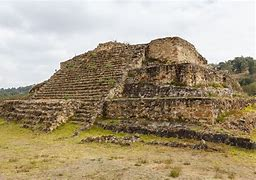

Historia
Tlaxcala, una confederación de cuatro señoríos prehispánicos (Tepeticpac, Ocotelulco, Tizatlan y Quiahuiztlán), mantuvo su independencia al resistir al Imperio Mexica, que no logró conquistarlos. En 1519, tras enfrentamientos iniciales con Hernán Cortés, los tlaxcaltecas formaron una alianza estratégica con los españoles, jugando un papel decisivo en la caída de México-Tenochtitlán. Como recompensa, conservaron privilegios como autonomía y exenciones de tributo durante la colonia. Además, fueron fundamentales en la evangelización y repoblación de territorios del norte de la Nueva España. Tlaxcala se consolidó como estado libre en 1857, preservando su rica identidad cultural, tradiciones, danzas y gastronomía, siendo un símbolo histórico de resistencia y colaboración que perdura hasta hoy.